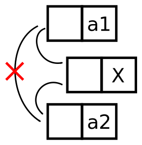
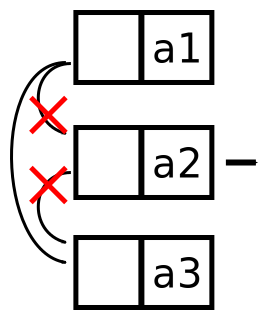

Массивы и списки
Как хранить последовательность элементов?
int numbers[256];
numbers[0] = 0;
for (int i = 1; i < 256; ++i) {
numbers[i] = numbers[i - 1] + i;
}
- есть во всех языках
- случайное чтение O(1)
- случайная запись O(1)
- фиксированный размер
Количество данных неизвестно заранее
Динамический массив
struct array{
int *ptr; // указатель на данные
int size; // количество зянятых ячеек
int capacity; // размер выделенной памяти
}
- выделение памяти O(n)
- случайное чтение O(1)
- случайная запись O(1)
- вставка, удаление O(n)
- вставка в конец, удаление O(1)/O(n)
Динамический массив: вставка
Динамический массив
Сколько памяти выделять?
- capacity = capacity + delta
- copy(ptr, new_ptr, size)
- T(size, delta) = O(size + delta)
- delta = C * size
- T(push(n)) = O(n) + T(push(n/C)) = O(n/(1 - 1/C)) = O(n)
Динамический массив: реализация
void init(array &data) {
data.ptr = NULL;
data.capacity = 0;
data.size = 0;
}
void resize(array &data, int size) {
if (size ≤ data.capacity) {
data.size = size;
return;
}
int *old_ptr = ptr;
data.ptr = new int[size];
data.capacity = data.capacity * 2;
for (int i = 0; i < data.size; ++i) {
data.ptr[i] = old_ptr[i];
}
data.size = size;
delete [] old_ptr;
}
Динамический массив: объединение
Динамический массив: реализация
void join(array &data, array &other) {
int old_size = data.size;
resize(data.size + other.size); // O(n)
for (int i = 0; i < other.size; ++i) {
prt[i + data.size] = other.prt[i];
}
data.size += ther.size;
}
void insert(array &data, int pos, int item) {
data.resize(data.size + 1); // O(n)
for (i = data.size - 1; i > pos; --i) {
data.ptr[i] = data.ptr[i - 1];
}
data.ptr[pos] = item;
}
Дорогое изменение порядка
Связанные списки
struct node_t {
node_t *next;
int data;
};
struct list {
node_t *first;
};
- Последовательное чтение/запись O(1)
- удаление/вставка элемента O(1)
- slice/concat O(1)
- Случайное чтение/запись O(n)
Связанные списки
- чтобы вставить элемент, надо поменять указатель в предыдущем элементе
void insert(node_t *node, node_t *new_node) {
new_node->next = node->next;
node->next = new_node;
}

Связанные списки
node_t* remove(node_t *node) {
node_t *to_remove = node->next;
if (to_remove == NULL) return NULL;
node->next = to_remove->next;
to_remove->next = NULL;
return to_remove;
}

Связанные списки
Вставка/удаление отрезка
void insert(node_t *node, node_t *first, node_t *last) {
last->next = node->next;
node->next = first;
}
node_t* remove(node_t *first, node_t *last) {
node_t *to_remove = node->next;
node->next = last->next;
last->next = NULL;
return to_remove;
}
Массивы vs Списки
| Операция | Массив | Список |
|---|---|---|
| последовательное чтение / запись | O(1) | O(1) |
| произвольное чтение / запись | O(1) | O(n) |
| удаление / добавление в конец | O(1)* | O(1) |
| удаление / вставка | O(n) | O(1) |
| определение размера | O(1) | O(n)* |
Очереди(FIFO) и стеки(LIFO)
Очередь: тривиальная реализация
struct queue {
node_t *first;
node_t *last;
};
void push(queue_t &queue, int &item) {
node_t *node = new node_t({NULL, item});
insert(queue.last, node);
}
int pop(queue_t &queue) {
int value = queue.first->data;
node_t *to_remove = remove(&queue.first);
delete to_remove;
return value;
}